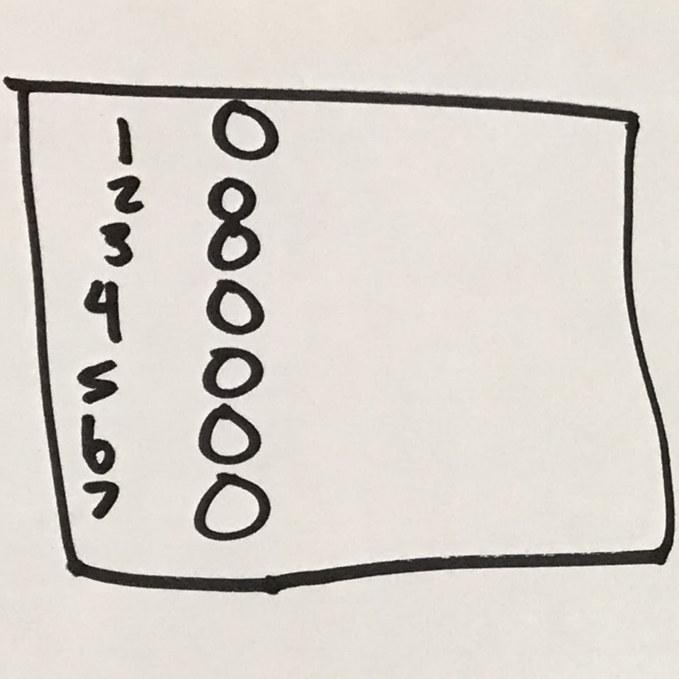
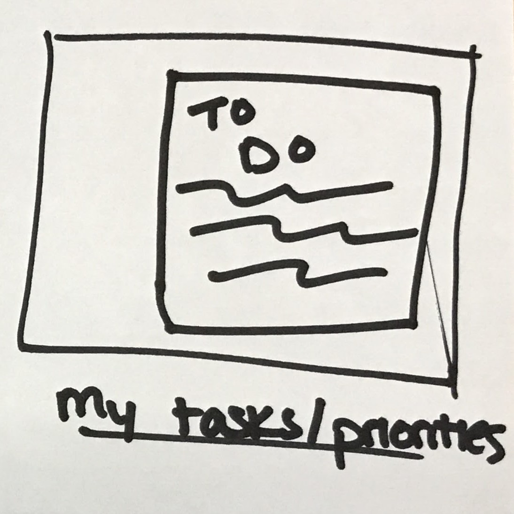
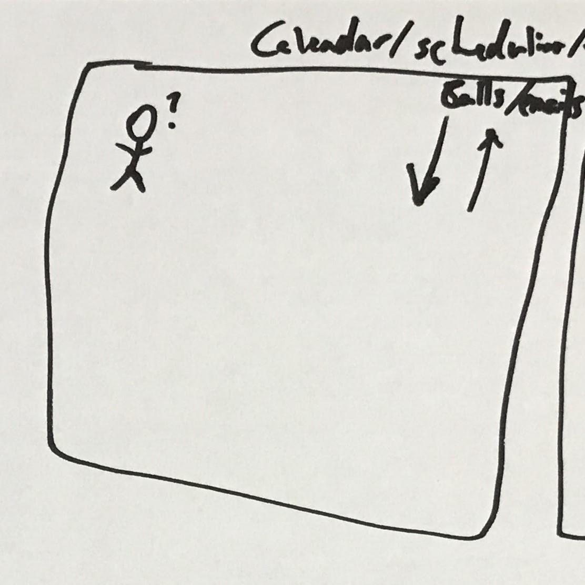
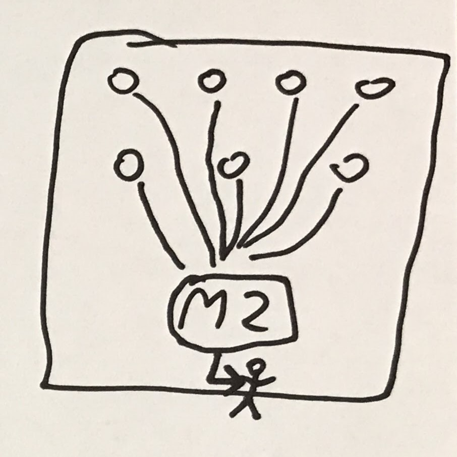

We're still sketching, but this time it's about a bigger picture (pun fully intended).
Using the large stickies, draw a UI or interaction within the flow of your solution. Use text on the side to describe the process you're visualizing. These sketches should relate to one another - parts of a process/workflow, or related pieces that address the problem statement together. Again, it's not about drawing ability - just about communication.
We'll present these total flows at the end as a group.
"The goal is to take the ideas we’ve generated so far and sketch an actual UI showing how a user would move through this part of the story — where they click, what info they enter, what they think, etc."
- Google Ventures
HWM #1:
Presenting the right data at the right time
+
HWM #2:
Reducing the number of steps to complete actions
A collective view:
How might we reduce the complexity of CE tasks?
Yesterday's Ideas

Pick & Go
M2 auto-selects tasks based on customer/sale data, and knows what steps need to be taken.

Task View
A 1-stop-shop for finding out what needs done, and the steps to do them.

Scheduler
Who's where? Can I leave my desk right now for this meeting? A team pulse-check.

Integrated Data
Consolidate all of our marketplace sources into M2 - no more logging into external portals.